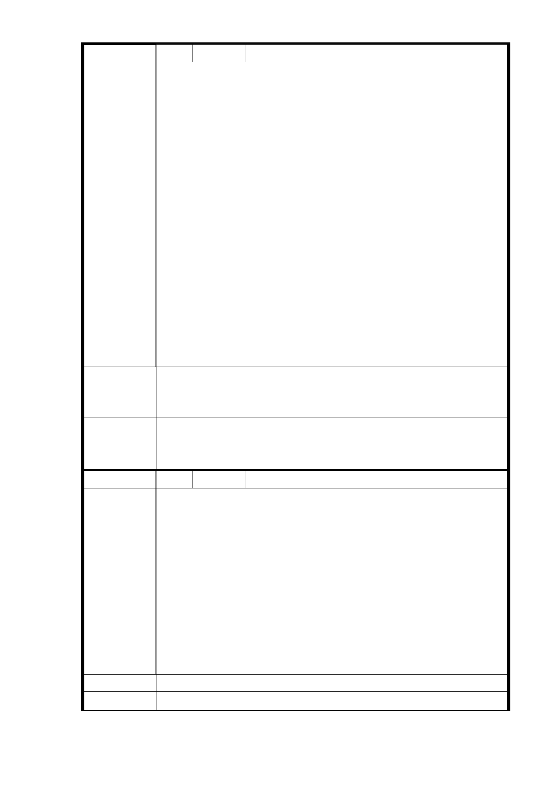

編 號 14 陳情人 安康里吳水上里長（R04）
主旨：（請函轉有關本人特別申明本人從未提出任何反對捷運
R4 站聯合開發計劃之陳情函件），本里全體里民非常贊
同捷運工程局，進行捷運信義線向東延伸段 R4 站規劃
時，於本里設置捷運出入口，詳如說明敬請審閱。
說明：
一、據台北市都市計劃委員會 101 年 3 月 8 日北市畫會一
字第 10130174700 號來函表示：以本人為代表之反對捷
運 R4 站聯合開發計劃陳情書一案，並非事實。
陳情理由
二、特別聲明本人從未提出任何反對捷運 R4 站聯合開發計
劃之陳情函件。
三、本里全力配合市政府捷運工程大眾運輸政策，以期便利、
健全地區發展，增進都市機能；本里並多次協助捷運工
程事務，以期捷運工程進度順利。
四、本里全體里民非常贊同捷運工程局之規劃，以期便利本
里里民使用捷運大眾運輸機能，健全本里地區發展。
五、相關人士偽造本人代表之反對捷運 R4 站聯合開發計劃
陳情書一案，本人已經循法律途徑，提起偽造文書及損
害名譽之訴訟。
建議辦法
市府回應
意見
由臺北市都市計畫委員會配合辦理。
R04 站南側捷二用地，維持公展範圍（基地面積 3,328 ㎡），
委員會決議 並辦理土地開發。
編 號 15 陳情人 張金寶（R04 捷二）
主旨：針對〝信義線東延段 Ro4〞南側出風口工程用地預計
以〝徵收〞方式取得施工土地一案；住戶表達〝堅決
反對〞，特以書面提出陳情。
說明：陳情人張金寶為信義路六段 50 號一樓土地及地上建物
之產權所有人，獲知該路段〝Ro4 捷運站南側出風
陳情理由
口〞；在未與地主／產權所有人充分溝通權益前，擅
自規劃將以〝徵收〞方式取得土地及建物；嚴重侵害
陳情人之權益。陳情人要求立即停止〝徵收〞規劃，
並應於召開〝專案小組審查會議〞時；通知陳情人到
場旁聽，並安排陳情人發言；陳述反對意見。
建議辦法
市 府 回 應 1.同編號 9 研析意見。
- 58 -